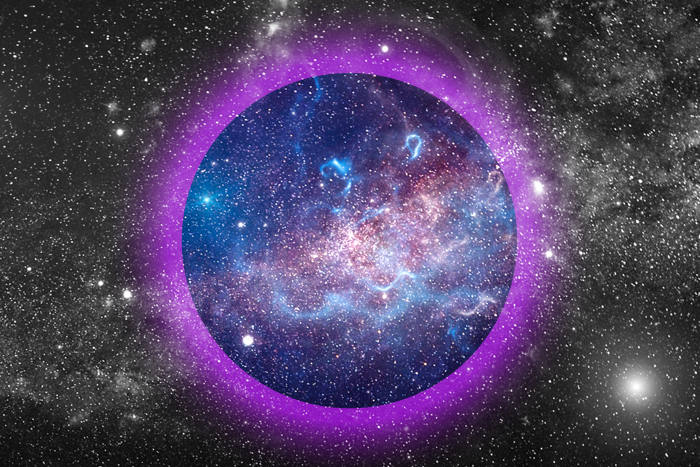
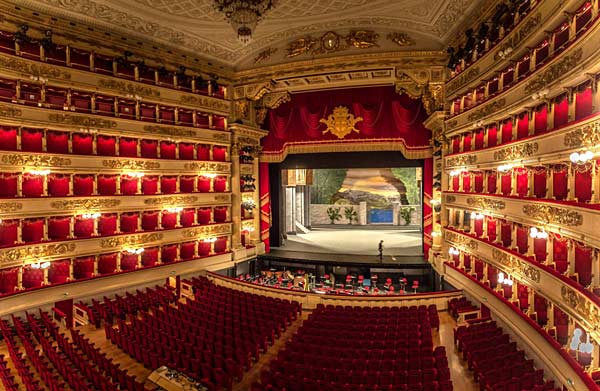

Актуальное

10.11.2020 г.
Ким и Валерия Брейтбурги написали книгу про искусство
Работа над книгой велась более пяти лет, и действенные методики, описанные в ней, созданные в результате анализа и синтеза идей…

10.11.2020 г.
Юрий Колокольников пытается спасти Землю в клипе «Космические силы»
Премьера клипа «Космические силы» группы «Мумий Тролль» состоялась 6 ноября 2020 года.
10.11.2020 г.
BTS получили четыре награды MTV EMA
BTS получили четыре награды MTV EMA 27-я ежегодная церемония награждения MTV Europe Music Awards состоялась 8 ноября 2020 г.

10.11.2020 г.
Открытие сезона «Ла Скала» отменено
Миланский театр La Scala отменил открытие сезона. Первый спектакль был назначен на 7 декабря — «Лючия ди Ламмермур».
10.11.2020 г.
Илон Маск сообщил о рождении сына
Основатель SpaceX и Tesla Motors стал отцом в шестой раз 4 мая 2020 года.